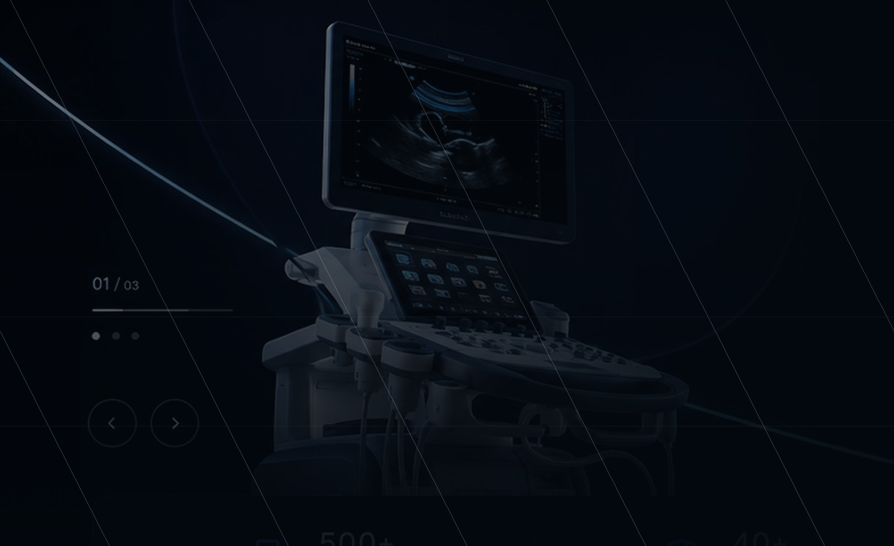

تجهیزات پزشکی، با ارائهای روشن و حرفهای
معرفی محصول، خدمات و مسیر استعلام در یک تجربه منظم؛ بدون شلوغی، بدون دکمههای نمایشی و بدون اطلاعات نامفهوم.

معرفی محصول، خدمات و مسیر استعلام در یک تجربه منظم؛ بدون شلوغی، بدون دکمههای نمایشی و بدون اطلاعات نامفهوم.
کاربر ابتدا با حوزههای اصلی آشنا میشود، سپس وارد محصولات، راهکارها، خدمات و فرآیند استعلام میشود.
مشاهده محصولات، بررسی خدمات یا ارسال درخواست؛ هر انتخاب به یک صفحه واقعی و کاربردی متصل است.
این پروژه یک فروشگاه آنلاین نیست. Clinoro محصولات پزشکی را معرفی میکند، راهکارهای مرتبط با محیط درمانی را توضیح میدهد، خدمات تکمیلی را شفاف میسازد و کاربر را به یک مسیر استعلام واقعی هدایت میکند.
تیتر، تصویر و CTA بدون کارتهای اضافه یا اطلاعات نامفهوم.
مشخصات محصول، اسناد، خدمات و مسیر بعدی در دسترس هستند.
محصولات، خدمات و RFQ همگی صفحه و عملکرد مشخص دارند.
ساختار دستهبندی بر اساس محیطهای درمانی و نوع استفاده شکل گرفته تا بازدیدکننده سریعتر مسیر مناسب را پیدا کند.
هر محصول با کاربری، مشخصات اولیه، مدارک قابل ارائه و مسیر استعلام معرفی میشود.

تصمیم خرید تجهیزات پزشکی به کاربری، زیرساخت، مصرفیها، آموزش و خدمات وابسته است. سایت باید این لایهها را روشن کند، نه اینکه فقط مجموعهای از عکسها باشد.
هر خدمت صفحه مستقلی دارد تا دامنه کار، خروجی و نقش آن در پروژه قابل فهم باشد.
محصولات و خدمات در قالب سناریوهای واقعی ICU، اتاق عمل، آزمایشگاه، تصویربرداری و کلینیک کنار هم قرار میگیرند.
محتوا باید برای تیم خرید، مهندسی پزشکی، مدیر بخش و کاربر درمانی قابل استفاده باشد.
از دریافت نیاز تا تطبیق فنی، پیشنهاد و شروع اجرا، هر مرحله بهطور شفاف تعریف شده است.
دیتاشیت، پیشنهاد رسمی، گارانتی، چکلیست نصب، سوابق آموزش و برنامه نگهداری.
دو تحلیل تازه و کاربردی درباره مقررات ثبت و ارزیابی شواهد نظارتی تجهیزات پزشکی.
راهنمای بهروزشده MHRA میان عرضه دستگاه در بازار بریتانیای کبیر و راهاندازی آن برای مصرف داخلی تفاوت میگذارد. این مقاله اثر این تفکیک را بر تولیدکننده، واردکننده، توزیعکننده و مرکز درمانی بررسی میکند.
مطالعه مقاله ←WHO در جولای ۲۰۲۶ فهرست انتقالی مراجع نظارتی معتبر برای تجهیزات پزشکی را منتشر کرد. این مقاله توضیح میدهد WLA و regulatory reliance چه هستند و چرا نباید آنها را با تأیید خودکار محصول اشتباه گرفت.
مطالعه مقاله ←نوع مرکز، تجهیز موردنیاز، شهر پروژه و توضیحات فنی را ارسال کنید تا مسیر بررسی منظمتر شروع شود.